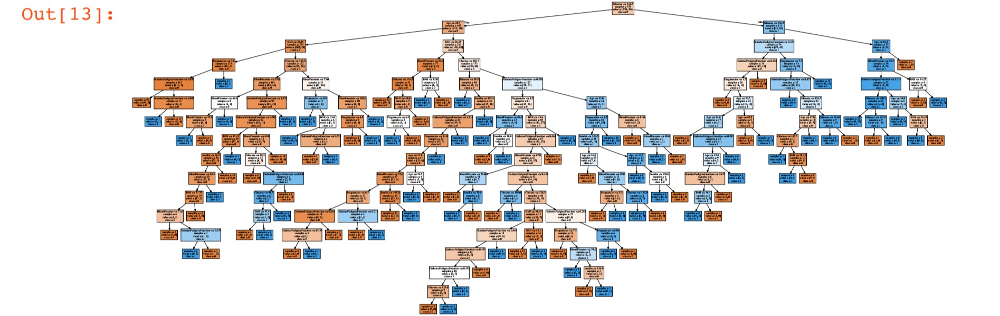
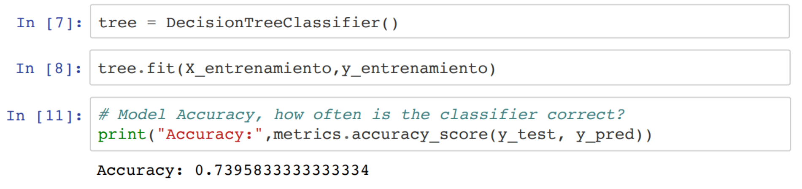

ÁRBOLES DE DECISIÓN (DIABETES)
Utilización de un algoritmo de árbol de decisión para predecir la aparición de diabetes.
A partir del conjunto de datos originarios del Instituto Nacional de Diabetes y Enfermedades Digestivas y Riñón. Se diseño un algoritmo de árbol de decisión para predecir diagnósticamente si un paciente tiene diabetes o no, en función de ciertas mediciones de diagnóstico incluidas en el conjunto de datos.
Teniendo en cuenta lo anterior se colocaron varias restricciones en la selección de estas instancias desde una base de datos más grande. En particular, todos los pacientes seleccionados son mujeres de al menos 21 años de herencia india de Pima.
Para la creación del árbol de decisión se realizo con el método DecisionTreeClassifier la cual forma parte de la biblioteca Scikit-learn de python, logrando una precisión del subconjunto de 0.739.
Python: pandas, numpy, graphviz, matplotlib, sklearn, pydotplus